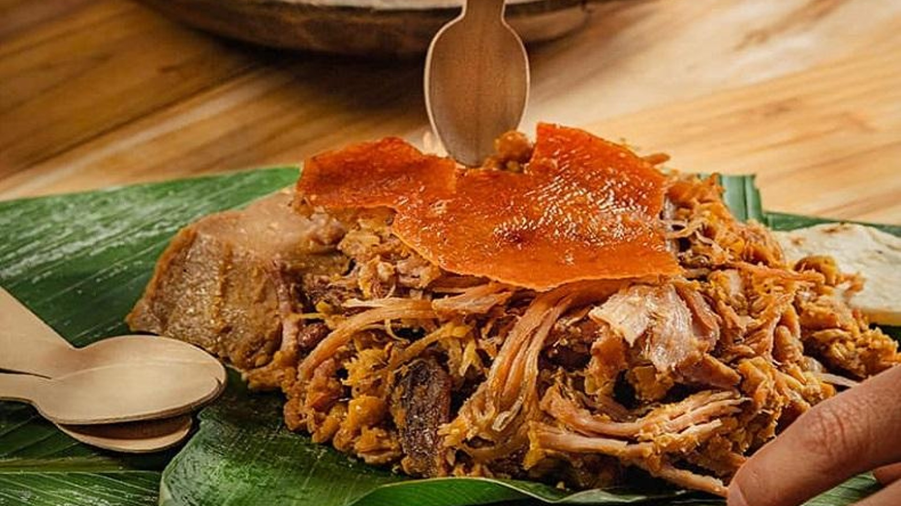
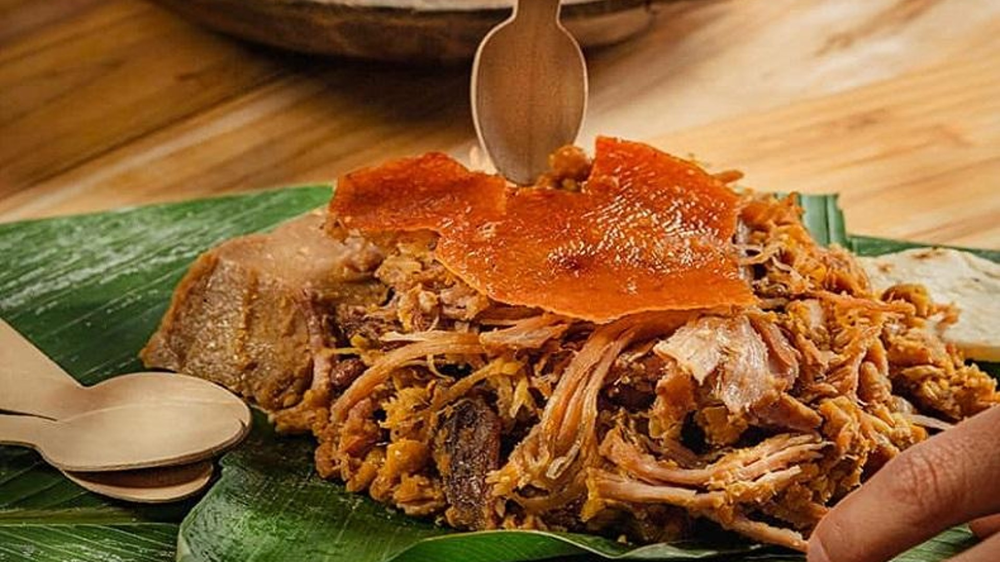

LECHONA
La lechona es un plato típico de la región Colombiana del Tolima y Huila. Este plato fuerte está compuesto por carne de cerdo, y arvejas principalmente. Es servido con arepas de maíz blanco


La lechona es un plato típico de la región Colombiana del Tolima y Huila. Este plato fuerte está compuesto por carne de cerdo, y arvejas principalmente. Es servido con arepas de maíz blanco
